Nomor dada
0000
Kategori
- Nama peserta
- -
- Wave start
- -
- Ukuran jersey
- -
- Golongan darah
- -
- Timing chip
- -
- Kontak darurat
- -
Telemetri peserta
Satu nomor dada membuka e-Pass race pack, hasil resmi, sertifikat finisher, dan galeri foto rute Anda.
Arahkan kamera ke barcode pada e-Pass atau nomor dada peserta.
Meminta izin kamera
Ketik nomor dada empat digit di atas, atau pindai barcode e-Pass untuk membuka data peserta.
Periksa kembali empat digit pada nomor dada Anda.
Gedung Wanita Karanganyar, Jumat 11 Desember pukul 10:00 - 20:00 dan Sabtu 12 Desember pukul 09:00 - 18:00. Bawa KTP asli sesuai NIK pendaftaran.
Sertifikat finisher dan analisis split pace muncul otomatis begitu timing mat di KM 10,0 membaca chip Anda.

BPC HIPMI Karanganyar
Pengusaha Pejuang Berdampak
Nama Pelari
Finisher
Telah menyelesaikan lomba pada rute terukur poros kota Karanganyar.
Laju per kilometer Anda dibandingkan dengan pemuncak kategori pada timing mat resmi.
Split per kilometer pembanding direkonstruksi pada laju rata-rata dari net time, karena bacaan timing mat per kilometer untuk pelari tersebut belum tersedia.
| Checkpoint | Pace pembanding | Pace Anda | Selisih kumulatif |
|---|
Dikelompokkan otomatis oleh pembacaan AI atas nomor dada di setiap titik foto.
Foto terbit bertahap dalam enam jam setelah lomba selesai, setelah AI selesai membaca nomor dada pada setiap frame.
Telemetri timing mat RFID, diperbarui setiap 15 detik sepanjang hari lomba.
| Pos | BIB | Nama pelari | Klub | Gun time | Net time | Pace |
|---|
Menghubungi server timing RFID.
Nama Pelari
-
Tunjukkan layar ini kepada marshall RPC. Barcode terenkripsi dan terikat NIK pendaftaran Anda.